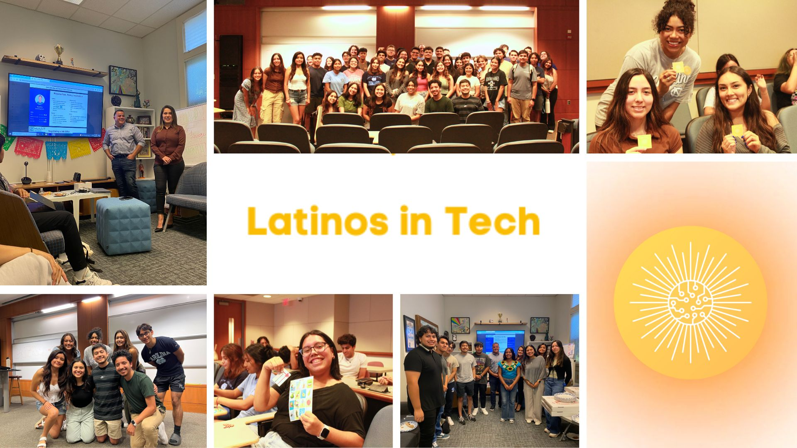

As the Team Lead for App Team Carolina's PORCH project, I manage a 10-person cross-functional team—encompassing design, iOS development, backend engineering, and web implementation. I conduct recurring meetings with our client to clarify requirements, create and delegate development tickets, and ensure cohesive collaboration across all roles. By fostering clear communication, providing strategic direction, and overseeing end-to-end development, I guide the team toward delivering a user-centric product that streamlines food donation collection for this hunger relief nonprofit.
As a founding member and the Marketing Director of UNC Latinos in Tech, I'm dedicated to increasing representation and building a supportive community for Hispanic/Latinx students in tech. I manage our marketing initiatives, create engaging graphics, and drive our social media presence, helping us reach over 1,000 people on Instagram with nearly 200 new followers in the first few months. Through this role, I aim to foster a sense of belonging and provide valuable resources to underrepresented students.
Selected as one of 50 students to attend the Google Latinx Student Leadership Summit, I had the privilege to connect with Latinx leaders in tech, gain insights into industry trends, and network with fellow student leaders. This experience has strengthened my commitment to advancing diversity in tech and to building connections that support professional growth.
As an MLT Career Prep Fellow, I engage in rigorous workshops, mentoring, and career development sessions focused on preparing underrepresented students for success in corporate environments. This fellowship has enhanced my leadership and strategic skills, preparing me for a meaningful career in tech and business.
As the VP of Logistics for Ascend, I play a key role in organizing events and initiatives that uplift and support underrepresented groups within the Kenan-Flagler community.
